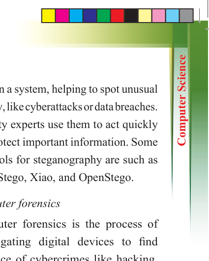
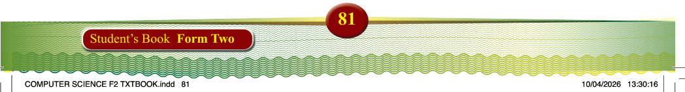
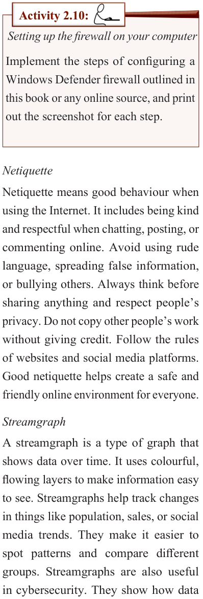

81
Student’s Book Form Two

Activity 2.10:
Setting up the firewall on your computer
Implement the steps of configuring a
Windows Defender firewall outlined in
this book or any online source, and print
out the screenshot for each step.
Netiquette
Netiquette means good behaviour when using the Internet. It includes being kind and respectful when chatting, posting, or
commenting online. Avoid using rude
language, spreading false information,
or bullying others. Always think before
sharing anything and respect people’s
privacy. Do not copy other people’s work
without giving credit. Follow the rules
of websites and social media platforms.
Good netiquette helps create a safe and
friendly online environment for everyone.
Streamgraph
A streamgraph is a type of graph that
shows data over time. It uses colourful, flowing layers to make information easy to see. Streamgraphs help track changes in things like population, sales, or social
media trends. They make it easier to spot patterns and compare different groups. Streamgraphs are also useful
in cybersecurity. They show how data
flows in a system, helping to spot unusual
activity, like cyberattacks or data breaches.
Security experts use them to act quickly
and protect important information. Some
free tools for steganography are such as
QuickStego, Xiao, and OpenStego.
Computer forensics
Computer forensics is the process of investigating digital devices to find evidence of cybercrimes like hacking, fraud, and identity theft. It involves collecting, analysing, and preserving
electronic data to help experts understand
how crimes occur. Specialists use
advanced tools to recover deleted files,
track online activities, and identify
criminals. This field is important because it
helps solve cybercrimes, protect sensitive
information, and prevent future attacks.
By properly handling digital evidence,
computer forensics plays a key role in
maintaining cybersecurity and ensuring
justice in the digital world. Table 2.11
outlines some steps to be considered in conducting computer forensics.